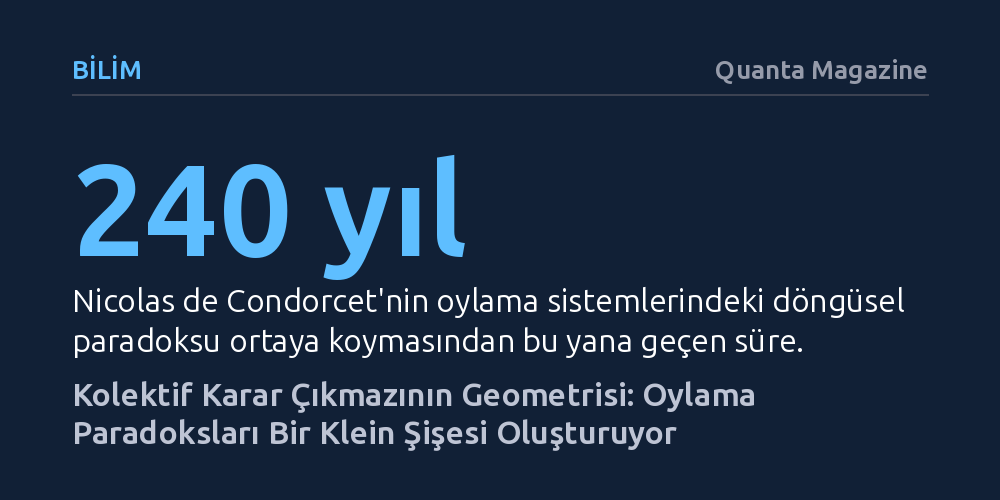

BILIM · Quanta Magazine · 2026-10-27
Matematikçiler, seçmenlerin tutarlı tercihlerine rağmen toplu sonucun döngüsel bir çıkmaza girdiği 240 yıllık Condorcet paradoksunun topolojik bir Klein şişesi oluşturduğunu kanıtladı. Bu geometrik model, demokratik oylama sistemlerindeki uzlaşmaz çelişkilerin neden kaçınılmaz olduğunu yeni bir kuramsal çerçevede açıklıyor.
Demokrasilerdeki seçim açmazlarının ve uzlaşmazlıkların kusurlu siyasetçilerden veya kurallardan değil, bireysel tercihleri toplumsal karara dönüştürmenin kaçınılmaz geometrik doğasından kaynaklandığını gösteriyor.

Demokratik seçimlerde iki aday yarışırken halkın iradesini belirlemek nispeten basittir; eşitlik bozulduğu sürece çoğunluğun oyunu alan aday kazanır. Fakat yarışa üçüncü bir seçenek eklendiğinde, kazananın kim olduğunu tanımlamak bile derin bir mantık krizine dönüşür. Tipik bir çokluk sisteminde, örneğin oyların yüzde 35'ini alan bir aday zafer ilan edebilir. Ne var ki diğer adayları destekleyen seçmenlerin tamamı ikinci tercih olarak başka bir ismi öne çıkarıyorsa, seçmenlerin yüzde 65'i aslında kazanan kişiden başka birini tercih ediyor demektir. Yani oylar kusursuz sayılsa bile çoğunluk ilkesinin ne anlama geldiği tartışmalı hale gelir.
Bu mantıksal çıkmazı ilk kez 1785 yılında Fransız matematikçi ve filozof Nicolas de Condorcet ortaya koydu. Bilimler Akademisi'ne yeni üyelerin adil biçimde seçilmesini araştıran Condorcet, her bir seçmenin kendi içinde tamamen tutarlı bir tercih sıralaması yapmasına rağmen, oylar birleştirildiğinde içinden çıkılamaz bir döngü oluşabildiğini fark etti. Üç adaylı bir senaryoda seçmenler sırasıyla Alice'i Bob'a, Bob'u Carol'a, ancak Carol'ı da Alice'e tercih edebiliyordu. Ortaya çıkan bu taş-kâğıt-makas benzeri döngüde herkes bir başkasına yeniliyor ve hiçbir meşru kazanan belirlenemiyordu.
1951 yılında iktisatçı Kenneth Arrow, bu sorunun sadece basit bir çoğunluk kuralı aksaklığı olmadığını matematiksel olarak kanıtladı. Arrow'un imkânsızlık teoremi, seçmenlerin adayları dilediğince sıralayabilmesi, hiçbir diktatörün bulunmaması ve iki aday arasındaki ilişkinin üçüncü bir adayın konumundan bağımsız olması gibi en temel demokratik koşulların hiçbir oylama sisteminde aynı anda sağlanamayacağını gösterdi. Kuralları nasıl değiştirirseniz değiştirin, bu demokratik ilkelerden en az birini feda etmek zorunluydu.
Seçim sistemlerindeki bu kaçınılmaz açmazı çözmek için yüzyıllar boyunca sayısız yöntem geliştirildi; fakat her yeni kural kendi zafiyetini de beraberinde getirdi. Matematikçiler ve iktisatçılar, sorunun mekanik kurallardan ziyade tercihlerin birleşme biçimindeki yapısal bir problem olduğunu fark ettiklerinde soyut matematiğe yöneldiler. 1980 yılında matematikçi ve iktisatçı Graciela Chichilnisky, nesnelerin yırtılmadan esnetilip büküldüğünde korunan özelliklerini inceleyen topoloji disiplinini sosyal seçim teorisine uyarlayarak Condorcet paradoksunun geometrik bir dille anlaşılabileceğini öne sürdü.
Bu yaklaşımda her bir seçmenin pusulası geometrik bir nesne olarak modellenir. Örneğin üç aday arasındaki ikili kıyaslamalar bir üçgenin köşeleriyle temsil edilir. Seçmenlerin ortak tercihler paylaştığı pusulalar, bu üçgenlerin kenarları boyunca birbirine yapıştırılarak daha büyük geometrik yapılar inşa edilir. 1990'larda matematikçi Yuliy Baryshnikov bu yöntemi geliştirerek Arrow'un teoremini topolojik olarak yeniden kanıtladı. Ancak bu modelde inşa edilen yapının uçlarında garip bir açık kalıyordu: Bir uçta adayların döngüsel sıralaması saat yönünde ilerlerken, diğer uçta tam tersi yönde dönüyordu.
Topolojik modelin iki ucundaki bu açıklar, Condorcet'nin döngüsel paradoksunu temsil ediyordu. Taş-kâğıt-makas oyununda bu tür döngüler oyunun kuralı gereği kabul edilebilirken, tek bir kazanan seçmesi beklenen seçim sistemlerinde tam bir felakete yol açıyordu. 2025 yılında Sydney Üniversitesi'nden doktora öğrencisi Ori Livson, danışmanı Mikhail Prokopenko ve Chennai Matematik Enstitüsü'nden Siddharth Pritam ile birlikte bu açık uçları ele aldı. Her iki uç da aynı imkânsız sonucu söylüyorsa, topolojinin temel kuralı devreye girmeliydi: Birbirinin aynısı olan iki parça birbiriyle yapıştırılabilirdi.
Ancak tüpün iki ucunu doğrudan bir simit gibi birleştirmek mantıksal çelişkiler yaratıyordu; çünkü birbiriyle bağdaşmayan tercih kenarları üst üste biniyordu. Araştırmacılar çözümü uçlardan birini kıvırarak yapıştırmakta buldu. Bir kâğıt şeridini kıvırıp uçlarını birleştirdiğinizde tek yüzeyli bir Möbius şeridi elde edersiniz; içi boş bir silindiri kıvırıp birleştirdiğinizde ise ortaya içi ve dışı olmayan bir Klein şişesi çıkar. Üç boyutlu uzayda kendi içinden geçmek zorunda kalan bu yüzey, ancak dört boyutlu uzayda kesişmeksizin pürüzsüz biçimde kapanabiliyordu.
Elde edilen bu topolojik nesne, oylama paradoksunun mükemmel bir kopyasıydı. Bir Klein şişesinin herhangi bir küçük bölgesine yakından baktığınızda tıpkı normal bir yüzey gibi iki tarafı var gibi görünür; fakat tüm yüzey boyunca ilerlediğinizde iç ile dış arasındaki ayrım tamamen kaybolur. Benzer şekilde, tek tek her seçmenin oy pusulası kendi içinde tamamen tutarlı ve mantıklıdır; ancak bu tercihleri bir araya getirdiğinizde küresel ölçekte tutarlı bir sonuç üretmek imkânsız hale gelir.
Bu keşif, demokratik karar alma süreçlerine dair kökleşmiş bir yanılgıyı kökünden sarsıyor. Çoğu insan seçim sonuçlarındaki tutarsızlıkları bozuk seçim sistemlerine veya hilelere bağlama eğilimindedir. Oysa Oxford Üniversitesi'nden Iain McLean'in belirttiği gibi, "Halkın iradesi çoğu zaman var olmaz." Bireysel tercihlerin toplamı, doğası gereği tek bir tutarlı sonuca varmak zorunda değildir; aksine matematiksel olarak yönlendirilemez bir döngüye kilitlenmeye mahkûmdur.
Araştırmacıların geliştirdiği bu model, sosyal bilimler ile saf geometri arasında beklenmedik bir köprü kuruyor. Eğer Condorcet paradoksu gibi 240 yıllık bir mantık çıkmazı dört boyutlu bir Klein şişesi olarak somut bir biçim kazanabiliyorsa, matematikteki diğer çözümsüzlük ve imkânsızlık teoremleri de benzer topolojik engeller barındırıyor olabilir. Bu çalışma, kolektif kararların sınırlarını anlamanın ötesinde, mantığın ve matematiğin sınırlarını geometrik olarak haritalandırmanın önünü açıyor.